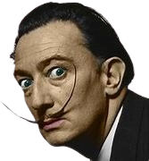

Salvador Dalí, nascido em 1904 em Figueres, Espanha, é um dos artistas mais icônicos e excêntricos do século XX, conhecido principalmente por suas contribuições ao movimento surrealista. Com seu bigode distintivo e personalidade extravagante, Dalí se destacou tanto pela sua vida pública quanto pela sua arte inovadora. Suas pinturas são caracterizadas por imagens oníricas, paisagens ilusórias e uma técnica meticulosa, que resultam em obras hipnotizantes e muitas vezes desconcertantes.
